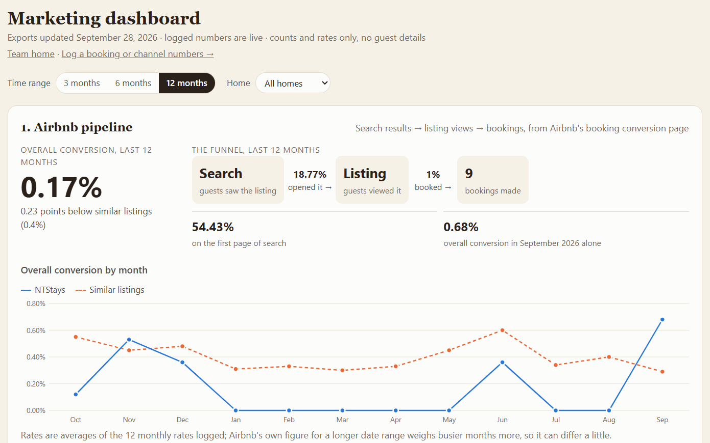
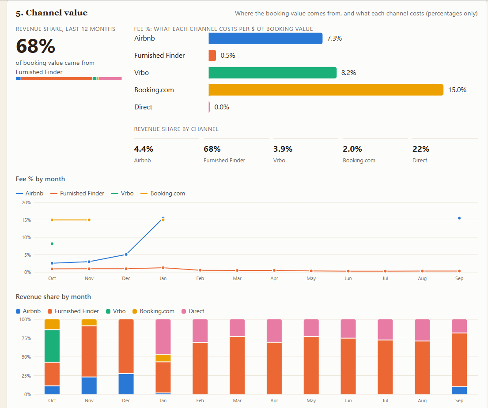
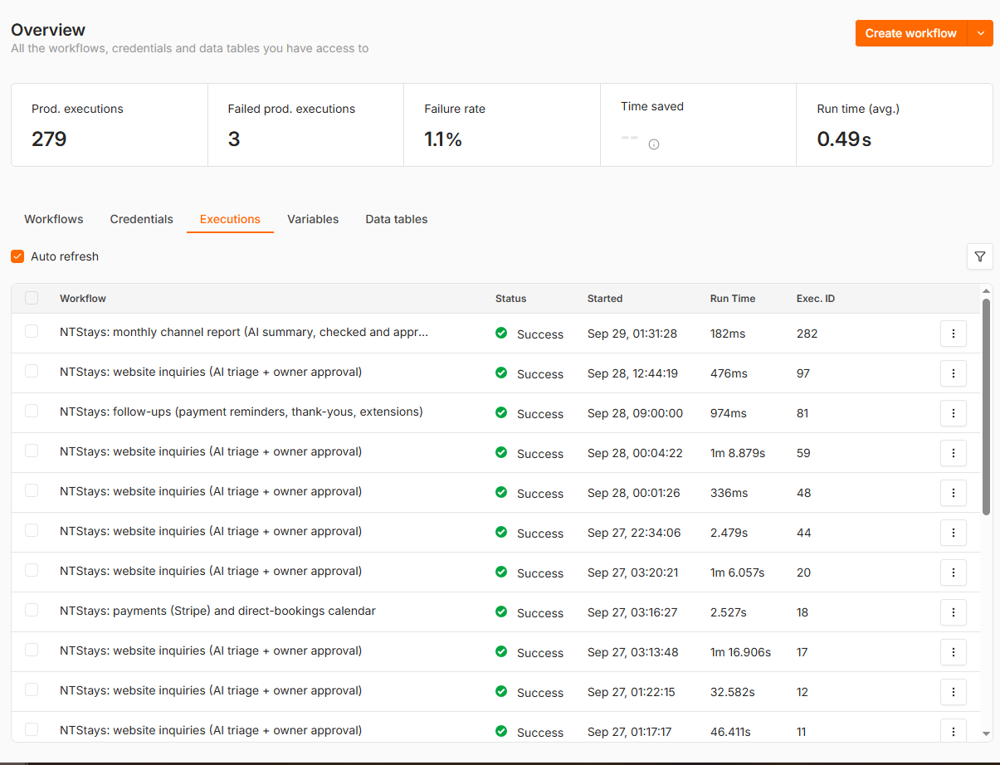
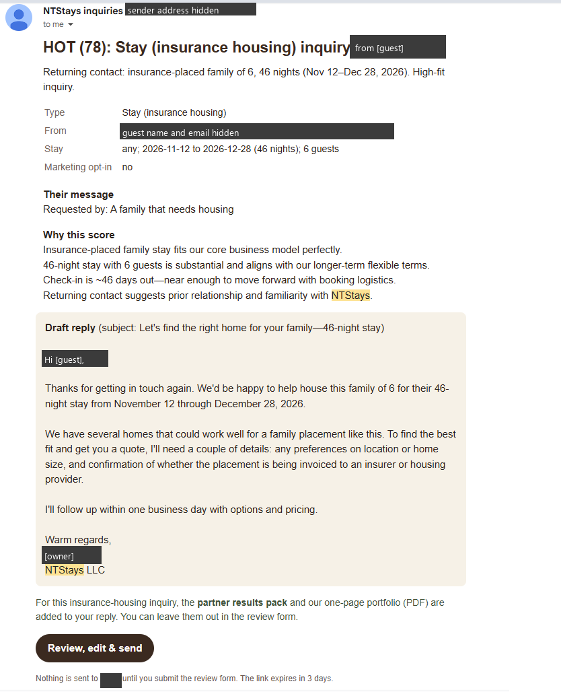
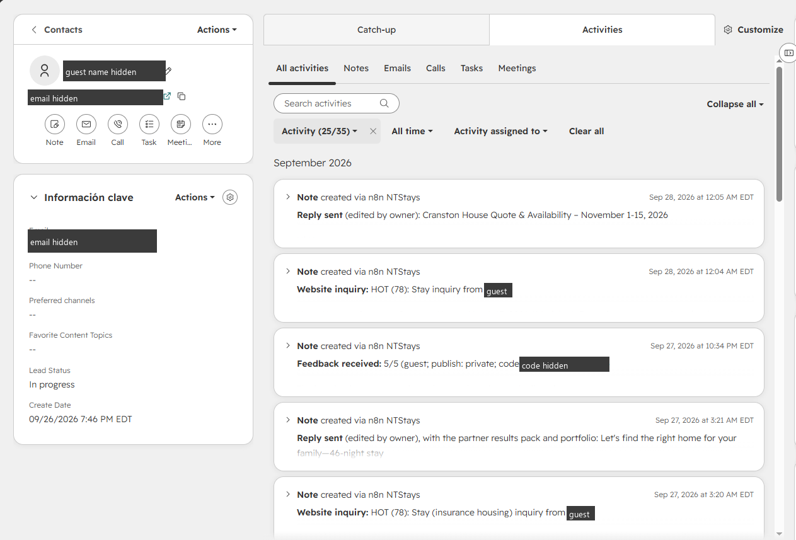
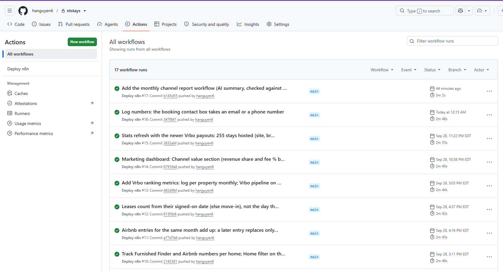

The problem
Bookings arrived through Airbnb, Vrbo, Booking.com, Furnished Finder and, now, a direct website. Inquiries were answered by hand, sources were unknown, and each platform reported performance differently: some as monthly rates, some as rolling 30- or 90-day counts, some as totals since the listing started. Nobody could say which channel was worth the most, or what each one cost.
See it running
Three ways to try it yourself:
Talk to the live assistant
Open ntstays.com and click Ask us. Try "How much is a month in Cranston?" (it won't quote a price: the guardrail in code swaps any price for "we'll send a personal quote") or "Which home is closest to South Shore Hospital?" (it answers from the approved facts).
Send a real request
The request forms on the travel-nurse page are live: a submission is scored by Claude, lands in the CRM, and the owner gets the draft reply to approve. You'll get that reply only if the owner presses Send.
See the real dashboard
The marketing dashboard with real numbers is behind a sign-in. Ask me for a view-only login: you'd sign in with your own email and a one-time code, see the live dashboard (counts, rates and percentages; no guest details), and have no access to anything that changes data. Access is removed after your review.
Screenshots from production






How it works
Lead handling
flowchart TB V[Visitor] --> F["Forms and chat
campaign source recorded"] F --> W["n8n: website inquiries
spam check · validate"] W --> C["Claude API
score · draft · JSON"] C --> G["Guardrails in code
no prices · no 'you're booked'"] G --> H[HubSpot contact + note] G --> A[["Owner approval form"]] A -->|Send| E["Reply email
+ Stripe payment link"] A -->|Don't send| L[Logged, nothing sent]
Measurement and the monthly report
flowchart TB X[Platform exports] --> S[Stats builder] M["Log numbers page
Furnished Finder · Vrbo · Airbnb"] --> D[("n8n data table
append-only")] S --> Q["Marketing dashboard
sign-in only"] D --> Q S --> R["n8n: monthly report
facts in code · Claude writes"] D --> R R --> K{{"Every number
in the data?"}} K -->|yes| A2[["Owner approval
edits re-checked"]] K -->|no| B[Blocked: owner gets the reasons] A2 --> T[Report emailed to the team]
What's running
Every workflow is generated from one Python file, versioned in git, tested, and deployed to the n8n server by GitHub Actions on push. Live is in daily use; Built and tested passes its tests against mock services and turns on as credentials are added.
| Workflow | Nodes | What it does | Status |
|---|---|---|---|
| Website inquiries | 75 | Validates the form, verifies the spam check, scores and drafts a reply with Claude, creates the HubSpot contact and note, emails the owner an approval form; on Send, replies with an optional Stripe payment link and a results pack. | Live |
| Website assistant (chat) | 16 | Answers from approved facts and live availability; structured output; price and booking-confirmation guardrails in code; hands a lead to the inquiry workflow only after explicit consent and a valid email. | Live |
| Team data (Log numbers) | 17 | Stores what platforms won't export (Furnished Finder and Vrbo listing stats, Airbnb conversion rates, off-platform leases) in an append-only data table with who entered what. | Live |
| Monthly channel report | 25 | On the 1st: computes last month's funnels, stays, revenue share and fee % in code; Claude writes the summary as structured JSON; blocks any draft whose numbers aren't in the data; owner approves (edits re-checked); every model call logged with tokens, cost and time. | Live first run Oct 1 |
| Error alerts | 3 | Any failed workflow run emails the owner with the step that failed. | Live |
| Payments | 15 | Stripe webhook: confirms direct bookings, marks the contact as a customer, publishes a direct-bookings calendar. | Built and tested |
| Follow-ups | 20 | Daily: unpaid payment links, thank-yous, extension offers, each drafted for owner approval. | Built and tested |
| Availability | 8 | Merges iCal feeds from Airbnb, Vrbo and Booking.com so the site and the chat know which dates are open. | Built and tested |
How the AI is kept honest
Structured output, checked in code
Claude returns JSON against a schema. A check step rejects bad JSON, replaces any price with "we'll send a personal quote", and turns "you're booked" into "our team will confirm by email".
Every number is checked
In the monthly report, code computes the figures and Claude only writes. Any number in the draft that isn't in the computed data blocks it, and so does a dollar amount or a missing input left unmentioned.
A human sends every reply
The AI drafts; the owner edits and presses Send in an n8n form. "Don't send" is logged. The chat can only hand a request to that same queue.
Fail closed
The dashboard sits behind Cloudflare Access and a Worker that verifies the login token's signature, audience and expiry. Until it is configured, it refuses everyone, on every hostname.
Audit trail and roles
Logged numbers are never edited or deleted; a correction is a new "void" row. Separate lists decide who may log numbers and who may only view the dashboard.
No guest details on dashboards
The marketing view shows counts, rates and percentages. Emails, phone numbers, names and rents stay in the CRM and the data table.
Tests gate deploys
GitHub Actions rebuilds the workflows, checks they match the committed JSON, runs the test suites, then deploys over a key that can only run the deploy script.
Who depends on it
The owner approves every inquiry reply from the email the workflow sends. The marketing manager uses the dashboard and logs the monthly platform numbers on a sign-in page. Guests use the chat and the request forms. One thing it surfaced early: the fee chart showed Airbnb's cost per booking jumping from 3% to 15.5% in December 2025, when Airbnb moved the account to its host-only fee, which made Vrbo (8.2%) and Furnished Finder (under 2% of lease value) the cheaper channels.
What broke
Selected failures, each with its cause and what changed so it can't happen the same way again.
| What broke | Cause | Fix |
|---|---|---|
| The marketing dashboard showed made-up numbers for two releases | The stats test suite wrote its sample output into the production data file | The builder writes production data only from the real exports folder; a regression test proves the tests never touch it |
| The chat refused real visitors ("spam check") | The Turnstile widget sat off-screen, so when Cloudflare asked for a click nobody could see it | Visible widget, a 30-second wait, and errors that show Cloudflare's code instead of failing silently |
| The chat went live before its backend | The site deployed on push; n8n needed a manual import | Tested, key-restricted automatic deploys for n8n |
| Topping up one Airbnb rate erased the others | "Latest entry replaces the month" was too blunt | Entries merge field by field; blanks never erase |
| Backfilled leases distorted conversion | Leases were dated by the day they were logged | A signed-on date, defaulting to move-in |
| Furnished Finder's funnel was meaningless at first | Its inquiry counts are totals since joining, while views are rolling 90 days | Monthly counts from the difference between entries, per listing; the dashboard refuses to divide across periods |
| Prompt caching was silently off | Claude Haiku 4.5 caches only prompts of 4,096+ tokens; ours was about 1,500 | Documented; cost impact negligible at this volume |
What I learned
- Put the rules in code and a human in front of the customer.A prompt can ask for no prices; a check step guarantees it.
- Data semantics matter more than charts.Running totals versus rolling windows, simple versus weighted averages, signed date versus logged date: most wrong numbers came from here, not from the AI.
- Separate test output from production, and prove it with a test.The worst bug of the project was a test writing to production.
- Label where every number comes from."(1 of 12 months)", "since joining" and "averages of monthly rates" kept people from over-reading thin data.
- Fit metrics to the business stage.I removed direct-booking targets because the website was days old; channel pipelines were what mattered now.
- Automate what platforms allow; make the rest fast.No host APIs exist for these numbers, so a paste-many-rows box replaced twenty forms.
What I'd build next
- Evaluation beyond the number check: a set of past months with known findings, scored on every prompt change, so a new prompt or model has to beat the old one before it ships.
- Alerting on the AI log: model calls are already logged with tokens, cost, time and check results; next is an alert when the block rate or cost moves out of its usual range.
- A campaign loop: the AI inquiry score saved per contact, so each campaign gets a quality-weighted lead count, and next week's posts drafted from what worked, checked against brand rules, approved by a person.
- An MCP server over the marketing data, so a marketer can ask Claude "why did Furnished Finder dip?" and get an answer from real numbers.